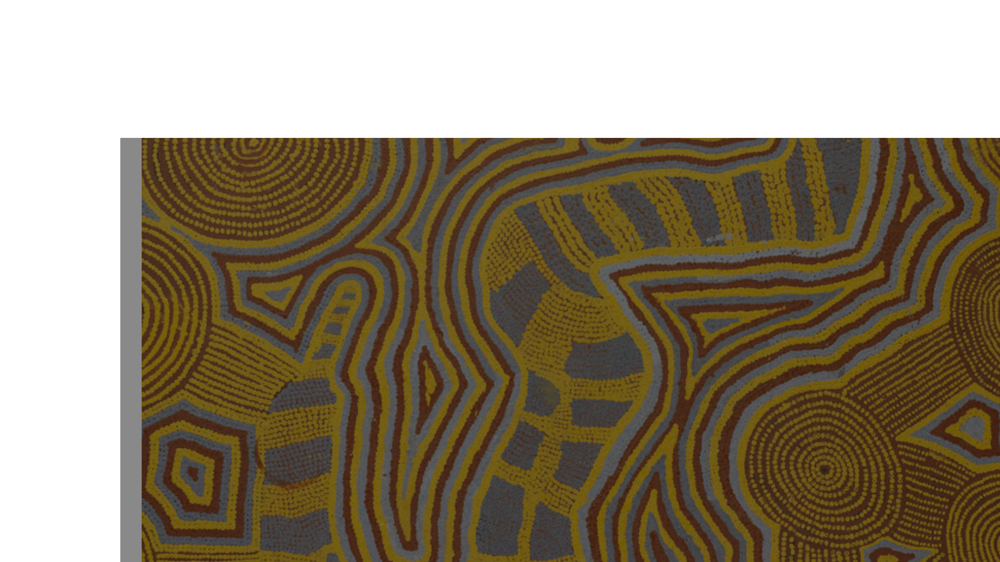

A cultura australiana tem forte ligação com as histórias do Tempo do Sonho. O quadro “Sonhos da Cobra” representa a Serpente Ancestral, figura criadora da paisagem e importante símbolo espiritual para os povos aborígenes.
O esporte é outro grande destaque, com práticas muito populares como rugby, críquete e surfe, reforçando o estilo de vida ao ar livre dos australianos.
A influência britânica também marca o país, visível no idioma, em festivais e em parte da arquitetura das grandes cidades. Eventos como o Sydney Festival celebram essa mistura cultural.
A culinária é multicultural, reunindo pratos como meat pie, lamington, churrascos e muitos frutos do mar, mostrando a diversidade que forma a identidade cultural do país.